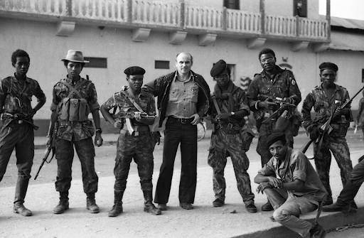
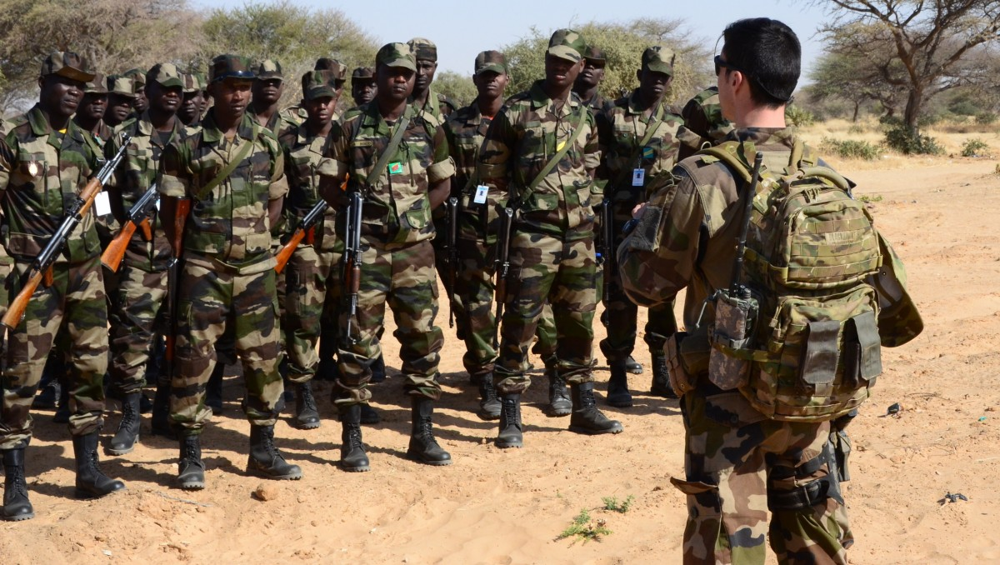
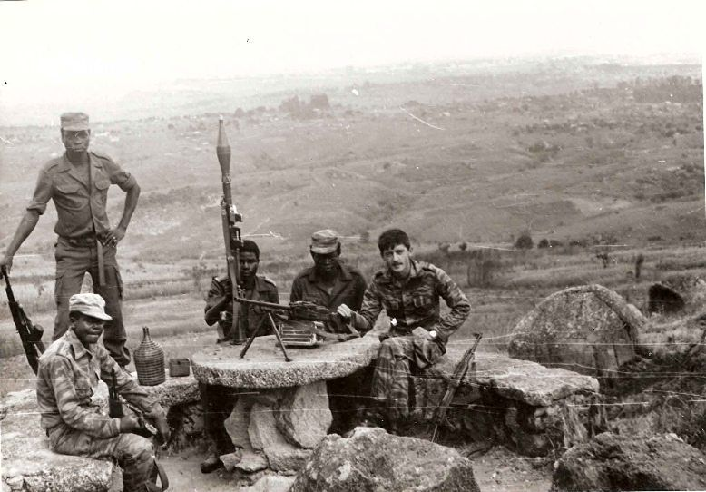

Poniżej opisane są 3 konflikty, które kiedykolwiek miały miejsce w Afryce.
Czas: 23 grudnia 2005 – 13 marca 2008
Miejsce: Czad i Sudan
Strony:
Siły:
Wynik: zwycięstwo Czadu
Straty:
Czas:
Miejsce: Kiwu Północne, Ituri
Strony:
Siły:
Wynik: podpisanie 23 marca 2009 oficjalnego porozumienia pokojowego
Straty:
Czas: 1961–1974
Miejsce: Angola
Strony:
Siły:
Wynik:
Straty: